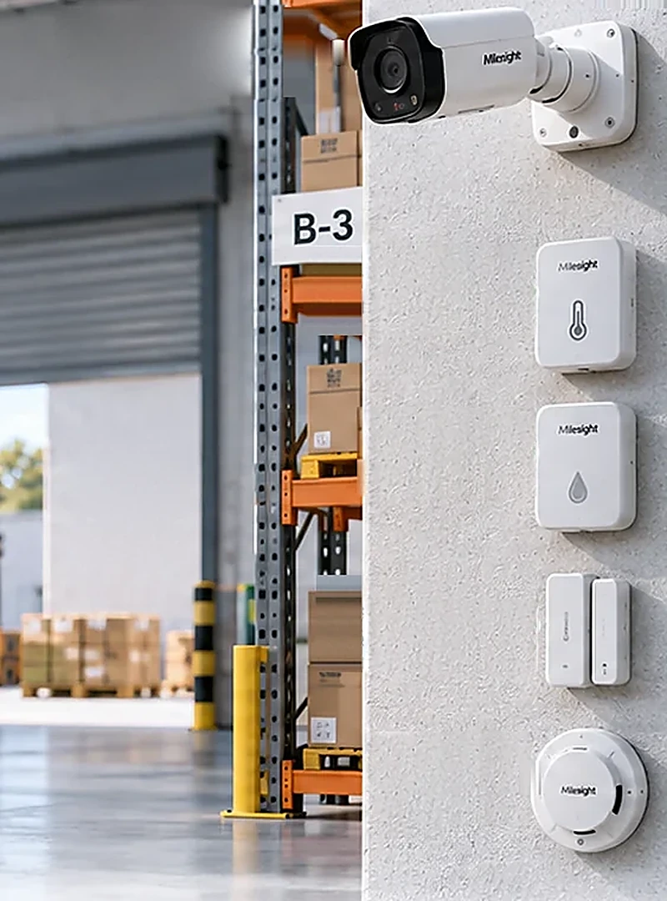

Datchiklar besh yil gapiradi, shlyuz esa bitta rozetkada turadi
Bu yechimda obyektda umuman elektr kerak emas. Batareyali datchiklar ombor ichidan eshik, harorat, namlik va suv haqida xabar beradi; ularning hammasini bir necha kilometr narida, elektr bor nuqtada turgan bitta shlyuz eshitadi. Video faqat hodisa kelganda ochiladi.
0 Vtfaqat datchikli variantda
3,5–6,8yil batareya
5–10obyekt bir shlyuzda
3–8mln so'm obyektga

Milesight UG65 shlyuzi va WS-seriyali datchiklar. Fotosurat ko'rgazma komplektidan.
01
Komplekt nimadan iborat
500–1000 m² li ombor yoki isitilmaydigan texnik xona uchun odatiy tarkib. Aniq son obyekt ko'rigida belgilanadi: har eshik, har lyuk va suv yig'iladigan har nuqta alohida datchik oladi.
WS301 · 2–4 dona
Eshik va darvoza datchigi
Ikki qismli magnit kontakt. Korpus ramkaga, magnit tabaqaga qo'yiladi. Ichida ER14250 batareya, sozlamaga qarab 3,5 yildan 6,8 yilgacha ishlaydi.
EM300-TH · 1 dona
Harorat va namlik datchigi
Ombordagi eng sovuq yoki eng nam nuqtaga qo'yiladi. ER18505 batareyada 10 daqiqalik intervalda besh yil ishlaydi. Qish uchun asosiy qurilma: quvur muzlashi shu yerdan ko'rinadi.
Zond · 1 dona
Suv sizish zondi
Podvalda, quvur kirgan joyda va suv yig'iladigan eng past nuqtada. Poldan 3–5 mm ko'tarib qo'yiladi, aks holda yuvish ham hodisa beradi.
EN 14604 · 1+ dona
Tutun datchigi
Har yopiq xonaga kamida bittadan. Sertifikat talab qilinadi: bu nafaqat aloqa, balki yong'in xavfsizligi majburiyati masalasi.
ONVIF · 1–2 dona
Tasdiqlovchi kamera
Asosiy kirishga qaratilgan kamera doimiy oqim bermaydi: eshik ochilganda platforma undan 30–60 soniyalik klip so'raydi. Obyektda kamera bo'lsa, yangisi olinmaydi.
UG65 · klasterga 1 dona
Shlyuz
Elektr bor nuqtada: filial tomida, qo'shni tashkilotda yoki elektrga ulangan obyektda. 2,9 Vt iste'mol qiladi, ichida tarmoq serveri bor — bulut kerak emas.
Datchik va shlyuz bitta chastota variantida buyuriladi. Turli variantdagi qurilma bir-birini umuman ko'rmaydi va bu faqat montaj kunida ma'lum bo'ladi.
02
Qishki sutka: 14-yanvar, Toshkent atrofidagi ombor
Bir sutkada nima bo'ladi va har bosqichda qancha energiya sarflanadi. Tashqarida tunda −11 °C, kunduzi +2 °C; obyektda elektr yo'q va hech qachon bo'lmaydi.
00:00tun
Besh datchik jim turadi
Datchiklar uxlamaydi, ular shunchaki gapirmaydi. Har biri mikroamper darajasidagi tok yeydi va o'n daqiqada bir marta uyg'onib holatini yuboradi. Ombor ichida +3 °C — kechagidan bir yarim daraja past.
Sutkasiga besh datchikka taxminan 0,2 Vt·soat
02:13hodisa
Yon eshik ochiladi
Magnit kontakt uziladi va WS301 bir soniyadan kam vaqt ichida efirga chiqadi. Xabar SF9 da 185 millisekund uchadi, shlyuzga −108 dBm va SNR +4,5 bilan yetadi. Shlyuz imzoni tekshiradi, payload'ni ochadi va MQTT orqali brokerga yozadi. Platformada hodisa 02:13:07 da paydo bo'ladi.
Bitta uzatish: 0,00002 Vt·soat
02:13:16kadr
Kamera uyg'onadi
Platforma reyestrdan shu datchikka bog'langan kamerani topadi va klip so'raydi. Kamera uyquda edi: uyg'onish va birinchi kadr to'qqiz soniya oladi. Operator ekranida hodisa allaqachon turibdi, kadr o'rnida yuklanish belgisi aylanadi.
EM300-TH ombor ichida +1,2 °C ni ko'rsatadi. Platformadagi chegara +5 °C: vazifa avtomatik ochiladi va obyekt menejeriga suv tizimini bo'shatish topshirig'i tushadi. Bu kamera ko'rmaydigan zarar — quvur yorilsa, ta'mir jihoz narxidan qimmatga tushadi.
09:20kunduz
Quyosh chiqadi va hech narsa o'zgarmaydi
Obyektda quyosh paneli yo'q va kerak emas. Shlyuz filial rozetkasida ishlayapti, datchiklar esa o'z batareyasida. Dekabr quyoshining kamligi bu yechimga umuman ta'sir qilmaydi — 02 va 04-yechimlardan asosiy farqi shu.
23:50yakun
Kunlik holat to'plami
Besh datchikning batareya foizi, RSSI va SNR qiymatlari platformaga tushadi. Bittasining signali bir hafta ichida 7 dB pasaygan: omborga tovar to'ldirilgan yoki javon ko'chirilgan. Servis vazifasi o'zi ochiladi.
Sutka yakuni: datchiklar 0,2 va tasdiqlovchi kamera 0,04 Vt·soat
03
Dekabr quvvat byudjeti
Bu yechimning asosiy afzalligi shu: obyektda quvvat masalasi umuman yo'q. Panel ham, akkumulyator ham, shkaf ham talab qilinmaydi. Quvvat faqat shlyuzga kerak, u esa boshqa joyda turadi.
Obyektda0,2 Vt·soat/sutka
Besh datchik shuncha sarflaydi va bu energiya ularning o'z batareyasidan olinadi. Besh yil davomida obyektga bironta simni tortish kerak emas.
Shlyuz nuqtasida142 Vt·soat/sutka
Shlyuz va 4G router birgalikda shuncha oladi. Rozetka bo'lsa, hisob shu yerda yopiladi. Bo'lmasa — 200 Vt panel va 12 V 100 A·soatlik LiFePO4, quyoshsiz yetti kunga yetadi.
Kamerada0,2 GB/oy
Oyiga 30 hodisada shuncha trafik chiqadi; doimiy oqim bu yechimda yoqilmaydi. Lekin kamera qo'shilishi bilan obyektda yana 6,5 Vt panel va 51 Vt·soatlik akkumulyator paydo bo'ladi: sarf sutkasiga 7,4 Vt·soatga chiqadi, smeta 3–8 mln dan 6–12 mln so'mga ko'tariladi va dekabr cheklovi 02-yechimdagi bilan bir xil bo'ladi.
Ko'rikda birinchi tekshiriladigan narsa — 2 km radiusda elektr bor nuqta bormi. Bo'lsa, quvvat bo'limi butunlay yopiladi va smeta 3 mln so'mga tushadi.
04
Datchikdan MKB platformasigacha
Yo'l oltita bo'lakdan iborat va har biri boshqasidan mustaqil almashtiriladi. Datchik brendi o'zgarsa, faqat birinchi ikki bo'lak o'zgaradi; qolgan to'rttasi joyida qoladi. Yashil halqali bo'g'inni bosing.
Ishlab chiqaruvchi buluti yo'lda yo'q: shlyuz to'g'ridan-to'g'ri bank brokeriga ulanadi va ma'lumot O'zbekistondan chiqmaydi.
Bu yechim ko'rsatmaydi, o'lchaydi. Shuning uchun ekranning markazida video emas, obyektning holati turadi: eshik yopiqmi, ichkarida necha daraja, suv bormi, datchiklar tirikmi.
Ko'rsatkich
Manbasi
Yangilanishi
Eshik va darvoza holati
WS301 magnit kontakti
Hodisada · 10 daq
Ombor harorati va namligi
EM300-TH, 30 kunlik grafik
10 daq
Suv sizishi
Zond datchigi
Faqat hodisada
Har datchikning batareyasi
Holat xabari, foizda
10 daq
Signal sifati
Shlyuzdagi RSSI va SNR
10 daq
Tasdiqlovchi kadr
Bog'langan kameradan klip
Talab bo'yicha
Masofadan qilinadi
Hodisaga qarab kadr so'rash. Uzatish intervalini o'zgartirish — buyruq navbatga qo'yiladi va datchikning keyingi uzatishida yetadi. Harorat chegarasini qo'yish. Ta'mir davriga datchikni sababi bilan to'xtatib turish.
Qilib bo'lmaydi
Eshikni masofadan yopish, sirena yoqish yoki obyektni aylanib ko'rish. Ta'sir qilish kerak bo'lsa, obyektga 05-yechimning relesi yoki 10-klaster shkafi qo'shiladi.
06
Montaj: kim, qancha vaqtda, nimani tekshiradi
Ish klaster bo'yicha rejalashtiriladi, obyekt bo'yicha emas. Shlyuz nuqtasi birinchi kuni yopiladi, obyektlar keyin ketma-ket ulanadi.
Bosqich
Brigada
Vaqt
Shlyuz nuqtasi: antenna, quvvat, SIM, sozlash
2 kishi, biri balandlikda ishlash ruxsati bilan
4–5 soat
Bir obyekt: 5 datchik, reyestr, sinov
2 kishi
45–70 daqiqa
10 obyektlik klaster, boshidan oxirigacha
2 kishi
3 ish kuni
1Antenna tik holatda, tomdan kamida 1,5 m yuqorida va metall panjaradan 1 m uzoqda mahkamlanadi. Koaksial kabel 5 m dan oshmaydi.
2Konnektor pastga qaratilib, o'z-o'zidan yopishadigan lenta bilan yopiladi. Suv kirgan konnektor bir mavsumda aloqa masofasini yarmiga tushiradi.
3Har datchikning DevEUI yorlig'i korpusni yopishdan oldin skanerlanadi va reyestrga yoziladi.
4Shlyuz panelida RSSI va SNR yozib olinadi. Mezon o'sha nuqtada ADR tanlagan SF ga nisbatan qo'yiladi: SNR demodulyator chegarasidan kamida 5 dB yuqori, RSSI esa sezgirlikdan kamida 10 dB yuqori bo'lsin. SF9 uchun bu SNR ≥ −7,5 dB va RSSI ≥ −119 dBm. SF12 ga tushib qolgan nuqta ham ishlaydi, lekin efir vaqti 1,3 soniyaga chiqadi va 1 foizlik efir cheklovi datchikni har uzatishdan keyin 130 soniya jim turishga majbur qiladi — shuning uchun SF10 dan yuqoriga chiqqan datchik ko'chiriladi.
5Eshik yopilib ochiladi, platformada ikkala holat ham ko'rinadi. Sinov hodisasi operator ekraniga chiqqanidan keyingina dalolatnoma imzolanadi.
Signal tovar bilan to'lgan, ish holatidagi omborda o'lchanadi: javon ko'chirilsa yoki javonlar to'ldirilsa, daraja 10–15 dB pasayadi va bo'sh omborda olingan o'lchov yaroqsiz bo'lib qoladi.
07
Narx: 3–8 mln so'm bir obyektga
2026-yil sentabr holatiga bozor bahosi. Yakuniy narx tender bo'yicha kamida uchta tijorat taklifidan olinadi.
Qator
mln so'm
Datchiklar, 4–6 dona
2,0–4,0
Shlyuz ulushi, 5–10 obyektga bo'linadi
0,6–1,5
Tasdiqlovchi kamera, obyektda bo'lsa nol
0–2,5
Montaj, sozlash, reyestrga kiritish
0,4–0,8
Jami
3–8
Kim yetkazadi
Rasmiy distribyutor orqali import. Yetkazish muddati odatda 4–8 hafta; kichik partiya aviajo'natma bilan ikki haftada keladi, lekin birlik narxi qimmatroq tushadi. Datchik, shlyuz va zaxira batareya bitta partiyada buyuriladi.
Kim o'rnatadi
Birinchi klasterni IoT integratori quradi: shlyuz, tarmoq serveri va MQTT ulanishi tajriba talab qiladi. Keyingi obyektlarni o'qitilgan bank montajchisi o'zi ulaydi — datchik o'rnatish bir soatlik ish.
Kim javob beradi
Shartnomada shlyuz va datchik uchun alohida reaksiya muddati yoziladi: shlyuz 24 soat, datchik 5 ish kuni. Bitta umumiy muddat yozilsa, klaster butun hafta jim turishi mumkin.
Chastota ruxsati bu yechimning yagona to'suvchi sharti: 868 MHz diapazoni bo'yicha javob xarid e'lon qilinishidan oldin yuridik xizmatdan yozma olinadi.
08
Besh yil ichida nima sarflanadi
Bu yechimning afzalligi uzoq muddatda ko'rinadi: harakatlanadigan qismi yo'q, yoqilg'i yo'q, almashtiriladigan akkumulyator yo'q. Besh yilda bitta jiddiy ish bor — batareya almashtirish.
Modda
Qachon
mln so'm
Datchik batareyalari
Beshinchi yil bahorida, hammasi bir yo'la
0,2–0,4
Shlyuz SIM ulushi
Oyma-oy, obyektlarga bo'linadi
0,4–1,2
Kamera 4G SIM
Kamera bo'lsa, eng katta qator
3–6
Shlyuz ko'rigi va dasturiy yangilanish
Yiliga bir marta
0,3–0,6
Obyekt sotilganda datchiklar yechib olinadi va keyingi obyektga o'tadi. Bank bitta komplektni besh yil ichida uch-to'rt marta ishlatadi — bu boshqa hech bir yechimda yo'q.
09
Uchta nosozlik va ularning oldini olish
Quyidagilar nazariy xatarlar emas: har uchalasi LoRaWAN tarmoqlarida muntazam uchraydi va har birining oldini olish usuli aniq.
Nosozlik 1
Yanvarda bir nechta datchik birdan jim bo'ldi
Sovuqda batareyaning impuls berish qobiliyati pasayadi. Passivatsiyadan to'liq chiqmagan element uzatish paytida kuchlanishni tashlab yuboradi va qurilma qayta yuklanadi.
Oldini olishMontajdan oldin har datchik 10–15 daqiqa yoqib qo'yiladi. Batareya kalendar bo'yicha almashtiriladi. Qishda interval uzaytiriladi, qisqartirilmaydi.
Nosozlik 2
Shlyuz tushdi — butun klaster ko'rinmay qoldi
Shlyuz bu yechimning yagona nuqtasi. U ishlamagan vaqtda A sinfidagi datchiklar hodisani joyida saqlab tura olmaydi: shlyuzsiz o'tgan olti soat nazoratsiz o'tgan olti soat degani.
Oldini olishIkki operator SIM'i va watchdog, DC UPS, LWT orqali mustaqil ogohlantirish, omborda butun zaxira shlyuz. 10 obyektdan katta klasterga ikkinchi shlyuz.
Nosozlik 3
Bitta datchik kuniga o'nlab soxta hodisa yuboradi
Magnit bilan korpus orasidagi tirqish ishlash chegarasida. Darvoza shamolda qimirlaydi yoki metall haroratdan kengayadi. Operator uch kundan keyin bu obyektga qarashni to'xtatadi.
Oldini olishMagnit tabaqaning ichki chetiga suriladi. Platformada 60 soniyalik birlashtirish filtri. Har datchik bo'yicha haftalik hodisa soni kuzatiladi.
10
Qaysi obyektga mos, qaysi biriga emas
Mos keladi
Bir tumandagi bir nechta ombor yoki sex: bitta shlyuz hammasini eshitadi va narx bo'linadi.
Isitilmaydigan ombor: qishda haroratni kuzatish quvur yorilishidan qimmatroq zararning oldini oladi.
Ko'p eshikli obyekt: har eshikka alohida datchik qo'yish kameradan besh barobar arzon.
Filialdan 2 km radiusdagi obyekt: shlyuz filial tomida turadi va quvvat masalasi umuman yo'q.
Mos emas
Yolg'iz turgan uzoq obyekt: shlyuz narxi bitta obyektga tushadi va yechim 04-variantdan qimmatlashadi.
Katta ochiq maydon: datchik faqat eshik va xonaning ichini ko'radi, hudud bo'ylab harakat esa qayd etilmaydi. Bunga 09-minora kerak.
Doimiy video talab qilinadigan qimmat obyekt: LoRaWAN kanali video ko'tarmaydi.
Davlat qo'riqlash pultiga ulanishi shart bo'lgan obyekt: pult SIA DC-09 kutadi, buni 05-yechim beradi.
11
Yetkazib beruvchidan so'raladigan savollar
Ro'yxatning birinchi ikki savoli hal qiluvchi: chastota ruxsati va shlyuzning bulutsiz ishlashi. Ularga hujjat bilan javob bermagan yetkazuvchi bilan tender bosqichida ajrashiladi.
Qurilmalar qaysi chastota variantida yetkaziladi va bu variant O'zbekistonda ruxsat etilganini nima tasdiqlaydi?Javob hujjat bilan beriladi. Og'zaki tasdiq shartnomaga ilova qilinmaydi.
Shlyuzning ichki tarmoq serveri bulutsiz ishlaydimi va MQTT mijoz sertifikatini qo'llab-quvvatlaydimi?Ikkalasi ham bo'lmasa, tashqi tarmoq serveri uchun alohida server ajratishga to'g'ri keladi.
Payload dekoderi qanday beriladi: tayyor JavaScript faylimi yoki hujjatdagi bayt jadvalimi?Bayt jadvali ham yetadi, lekin dekoderni yozish ishga ikki-uch kun qo'shadi.
Batareya resursi qaysi interval va qaysi haroratda hisoblangan?+20 °C uchun hisoblangan raqam −20 °C da kamida chorak barobar qisqaradi.
Konfiguratsiyani faylga saqlab, zaxira shlyuzga bir amalda tiklash mumkinmi?Bu shlyuz almashtirish vaqtini 40 daqiqa yoki bir kun qilib belgilaydi.
Dasturiy ta'minot yangilanishi necha yil davomida beriladi va u qanday yetkaziladi?Yangilanish bulut orqali kelsa, bulutsiz ishlash sharti buziladi.
Shlyuz ishdan chiqsa, almashtirish muddati nechchi kun va zaxira jihoz qayerda turadi?Javob «import qilamiz» bo'lsa, zaxira shlyuz bank omborida turishi kerak.
Tutun datchigi EN 14604 sertifikatiga egami va nusxasi beriladimi?Yong'in xavfsizligi mas'uli shu hujjatga tayanadi.
Bir shlyuzga necha qurilma 10 daqiqalik intervalda sinovdan o'tgan?Katalogdagi maksimal son o'rniga sinov protokoli so'raladi.
Zaxira batareyalar qaysi shartlarda saqlanadi va yetkazish muddati qancha?Issiq omborda saqlangan batareya resursining bir qismini yo'qotadi.